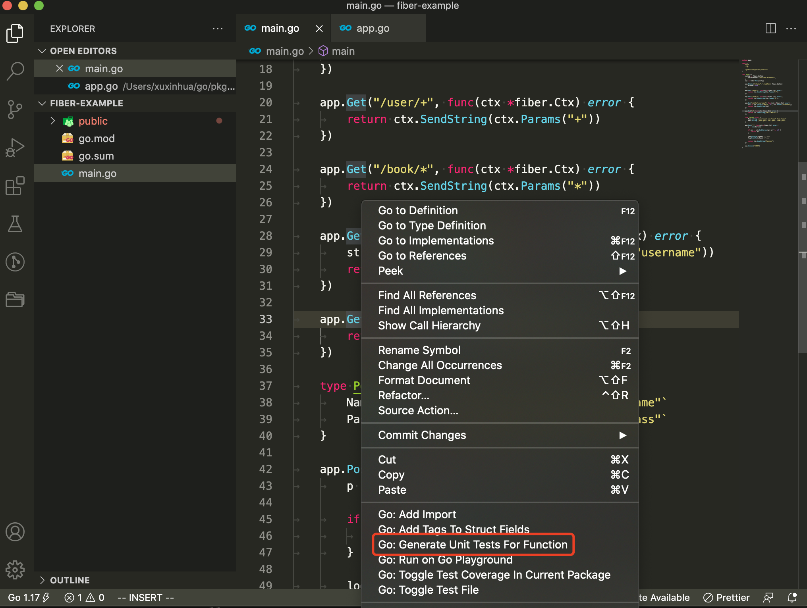

Go Fiber 框架系列教程 04：测试应用
大家好，我是 polarisxu。
实际项目中，大家经常不会对 Web API 写单元测试。Go 标准库不仅有 testing 包支持普通单元测试，还有 net/http/httptest 包支持 HTTP 的测试。
本文虽然是测试 Fiber 应用程序，但对其他的框架也适用。
01 如何测试
Web API 的单元测试如何进行？
本节介绍的测试方法主要是验证请求返回的 HTTP 状态码是否符合预期。
如果返回的状态码是 200 OK，那么表示这个测试用例成功（Pass），如果返回的状态码是 404 Not Found，那么表示这个测试用例失败（Fail）。所以，要求请求返回正确的状态码。
02 VSCode 生成测试
VSCode 安装了 Go Team 的 Go 插件后，可以一键生成单元测试。
在某个函数上右键，出现的菜单中会有 Generate Unit Tests For Function：

点击它会自动创建 main_test.go 文件，并生成类似下面的代码：
package main
import "testing"
func Test_main(t *testing.T) {
tests := []struct {
name string
}{
// TODO: Add test cases.
}
for _, tt := range tests {
t.Run(tt.name, func(t *testing.T) {
main()
})
}
}
03 动手写单元测试
动手之前，需要先介绍下 Fiber 中专门针对测试提供的方法：
// Test is used for internal debugging by passing a *http.Request.
// Timeout is optional and defaults to 1s, -1 will disable it completely.
func (app *App) Test(req *http.Request, msTimeout ...int) (resp *http.Response, err error)
该方法接收一个 *http.Request，返回 *http.Response，通过这个 Response 可以获得 HTTP StatusCode。
待测试的程序如下：
// main.go
package main
import (
"github.com/gofiber/fiber/v2"
)
func setupRoutes(app *fiber.App) {
app.Get("/hello", func(ctx *fiber.Ctx) error {
return ctx.SendString("Hello World!")
})
}
func main() {
app := fiber.New()
setupRoutes(app)
app.Listen(":3000")
}
测试程序如下：
package main
import (
"net/http/httptest"
"testing"
"github.com/gofiber/fiber/v2"
"github.com/stretchr/testify/assert"
)
func TestHelloRoute(t *testing.T) {
tests := []struct {
description string
route string // route path to test
expectedCode int // expected HTTP status code
}{
{
description: "get HTTP status 200",
route: "/hello",
expectedCode: 200,
},
{
description: "get HTTP status 404, when route is not exists",
route: "/notfound",
expectedCode: 404,
},
}
app := fiber.New()
setupRoutes(app)
for _, test := range tests {
// 利用 httptest 包生成 request
req := httptest.NewRequest("GET", test.route, nil)
resp, _ := app.Test(req, 1)
assert.Equalf(t, test.expectedCode, resp.StatusCode, test.description)
}
}
我们还用了 github.com/stretchr/testify 库，这是一个辅助测试的库，assert 是它的子包，用于进行断言。
然后运行如下命令测试：
$ go test -v .
=== RUN TestHelloRoute
--- PASS: TestHelloRoute (0.00s)
PASS
ok github.com/polaris1119/fiber-example
04 总结
本文从 HTTP 状态码的维度测试 Web API，保证 API 大的逻辑正确，但不包括业务逻辑相关的测试。